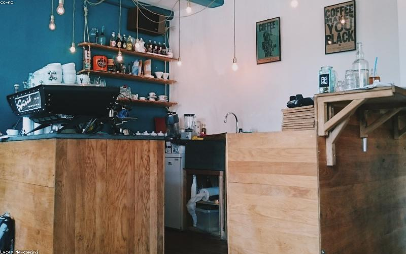
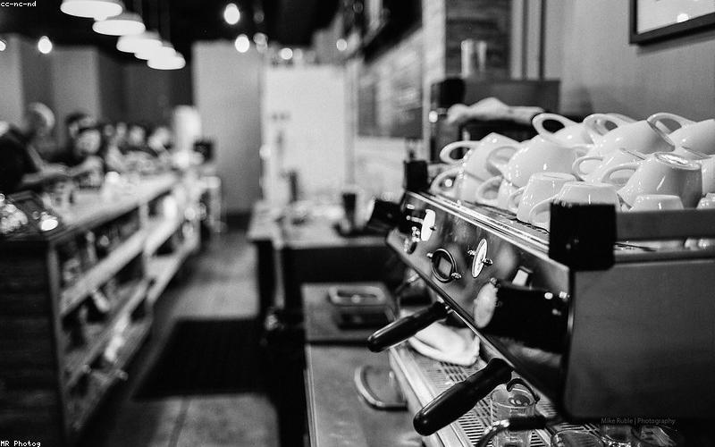
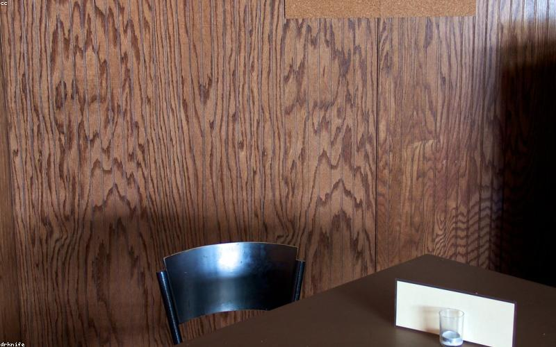
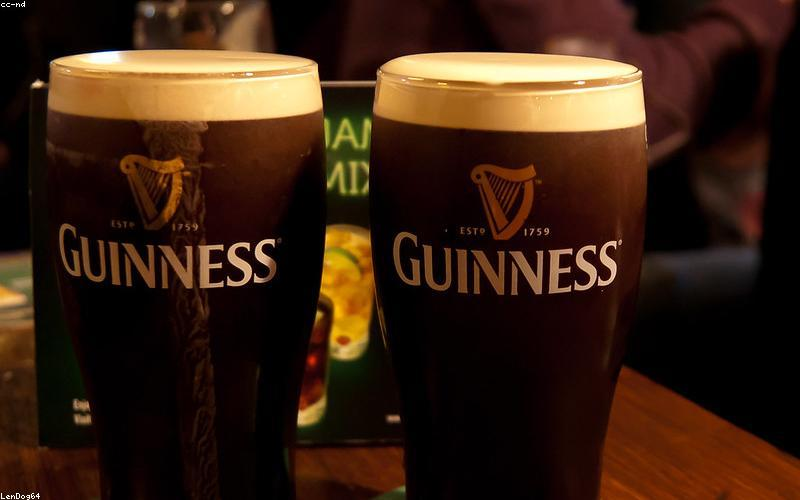
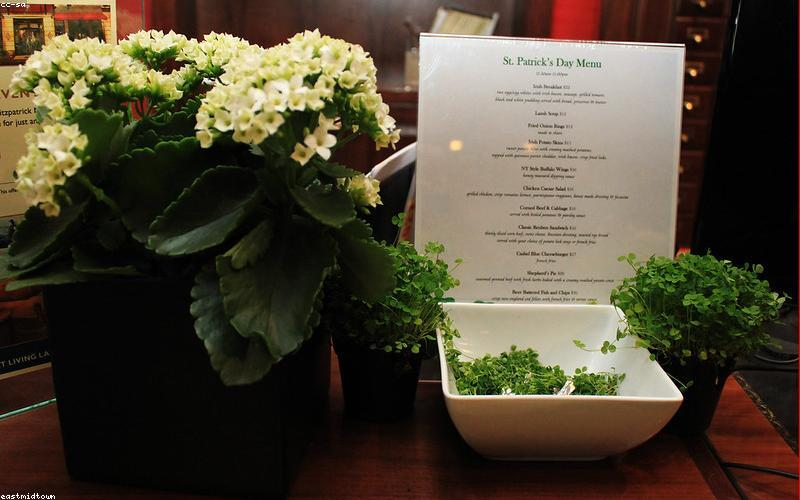
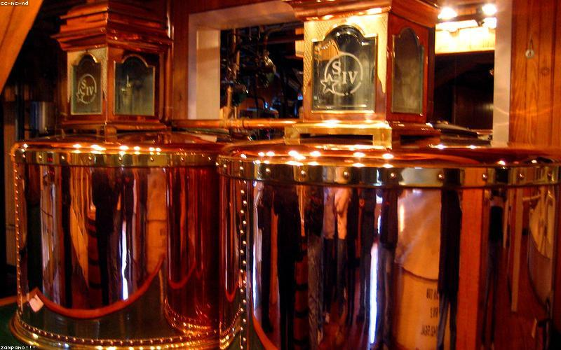

Places
Where to go,
what to do

Coffee · Roastery
Cloud Picker Coffee
Smithfield Square
Dublin's most serious roaster. Peter and Francis Nolan started Cloud Picker as a specialty roaster focused on traceability — they visit farms, know their producers by name, and roast at the Smithfield flagship where the roaster is visible from the café floor. The filter menu is exceptional; single origins served as V60 or batch brew, with tasting notes that are accurate rather than aspirational. This is the coffee that wins at international competition level. Required stop.
↗ MAPS

Coffee
Urbanity Coffee
Near Smithfield
Neighbourhood third-wave café with excellent sourcing — they work with Cloud Picker and other quality Irish roasters depending on the season. Smaller and more intimate than Cloud Picker's flagship; better for a longer sit and a quieter morning. Good food menu alongside.
↗ MAPS

Coffee
Vice Coffee
Stoneybatter, near Smithfield
One of the best espresso bars in the city. Vice operate multiple locations but the ethos stays consistent: excellent espresso, tight menu, no nonsense. The Stoneybatter location is the most neighbourhood-feeling of the bunch. Quick stop or longer sit — works either way.
↗ MAPS

Food
Fegan's 1924
Smithfield area
Named for the year, Fegan's is the kind of neighbourhood restaurant that the north inner city needed — good food, not a tourist production, reasonably priced. Irish produce with a light touch. Good option for lunch when you're exploring Smithfield and don't want to go far.
↗ MAPS

Bar · Trad Sessions
The Cobblestone
Smithfield Square
The most important pub on this list. A true traditional Irish pub — small, no frills, live trad sessions most nights, crowd of actual locals and musicians. The fight to preserve it from development became a flashpoint in Dublin's conversations about what the city is for. Drink Guinness here. Listen to the music. The contrast with the specialty coffee world one door over is exactly what Dublin is.
↗ MAPS

Bar
Frank Ryan's
Near Smithfield
A proper Dublin pub with no pretension and no craft beer list. The kind of place that exists to make you comfortable — worn bar stools, good Guinness pour, conversation if you want it. A corrective to the curated drinking experience of the specialty bars.
↗ MAPS

Distillery
Teeling Whiskey Distillery
Newmarket, near Smithfield
The first new whiskey distillery in Dublin since 1976. The Teelings brought craft distilling back to the city and the result is worth experiencing — the facility tour is unusually good (you actually see all the production stages), the whiskey is excellent, and the shop carries cask-strength and limited releases you won't find in off-licences. The Stout Cask and the Single Grain are the entry points. The 24-year single malt is the pinnacle.
↗ MAPS